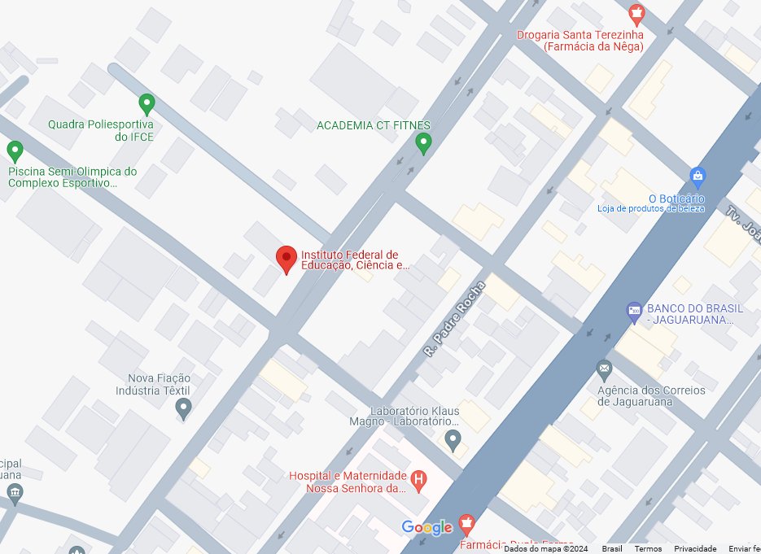

Campus Jaguaruana abre seleção de novas turmas para 2024.1 Edital traz 120 vagas para cursos técnicos subsequente, sendo:
As inscrições já estão abertas e vão até o dia 8/10, por meio do endereço: ifce.funetec.org. Para se inscrever, o candidato precisará de uma cópia digital do RG e histórico escolar em formato PDF
Há oferta de vagas para cursos: técnico em Administração (49 vagas – turno vespertino); técnico em Computação Gráfica (50 vagas – turno noturno); técnico em Informática (58 vagas – turno noturno); técnico em Informática para Internet (22 vagas – EAD); tecnologia em Análise e Desenvolvimento de Sistemas (12 vagas – matutino)
O período de inscrição para Transferência Interna é de 28 de setembro a 05 de outubro. Para a Transferência Externa vai de 17 a 23 de outubro. Já as inscrições para ingresso como diplomado podem ser realizadas entre os dias 20 a 24 de novembro.
Os interessados deverão protocolar a inscrição no horário de 13h as 17h, na recepção do campus.
Serão ofertadas 30 vagas ao todo, sendo 25 destinadas ao público externo em geral e 05 vagas exclusivas para servidores e alunos.
Os interessados deverão fazer sua inscrição no período 25 de setembro a 06 de outubro de 2023 no campus avançado de Jaguaruana
As inscrições são gratuitas e as aulas serão realizadas nas dependências do IFCE campus avançado de Jaguaruana, todas as terças-feiras e quartas-feiras no horário de 18:20hs às 20hs.
Partindo da iniciativa de expansão do ensino profissional e tecnológico, implementado pelo Governo Federal, a partir do ano de 2006, o Ministério da Educação – MEC, através da portaria 687 de 08 de Junho de 2008, autorizou o então Centro Federal de Educação Tecnológica do Ceará – CEFET, à instalação e o funcionamento da sua Unidade de Ensino Descentralizada – UNED, em Limoeiro do Norte, objetivando levar os serviços do CEFET/CE, a toda a comunidade do Vale do Jaguaribe.
Em 20 de Dezembro de 2008, é publicada a Lei 11.892 que transforma as UNED’s em Institutos Federais de Educação, Ciência e Tecnologia; desta feita, o agora Campus de Limoeiro do Norte, ganha maior representatividade na região, e a prestação dos seus serviços demanda uma nova estruturação; seguindo a tônica da expansão da Rede Federal de Ensino Profissional e Tecnológico, em consonância com os arranjos produtivos e potenciais locais, implantou o avançado de Jaguaruana, vinculado atualmente ao Campus de Tabuleiro do Norte, a fim de contribuir com o processo de interiorização e descentralização da educação, ampliando a possibilidade para que todos possam ter a acesso a uma educação profissional federal de excelência.
No ano de 2014, o Campus Avançado de Jaguaruana inicia as suas atividades ao ofertar os cursos do PRONATEC na modalidade FIC Mulheres Mil e depois mais três cursos FIC regulares. Neste mesmo processo, percebeu-se o anseio e necessidade da população desse município pelo ensino profissionalizante ao ofertar 70 vagas para os cursos FIC e em apenas seis horas de inscrição havia o dobro de candidatos inscritos.
Atualmente, o Campus de Jaguaruana tem desenvolvido ações voltadas para a formação inicial e continuada em diversas áreas do conhecimento, buscando envolver a comunidade escolar e a sociedade em geral, com o objetivo claro de tornar-se padrão de excelência na educação profissional no Vale do Jaguaribe.
Além dos cursos de nível técnico e superior, o IFCE Jaguaruana oferece regularmente cursos de Formação inicial e Continuada - FIC - em diversas áreas como: portugês, redação, física e matemática para o ENEM, Inglês básico e Intermédiário, Informática Básica, Desenvolvimento de Jogos, Painéis Elétricos e vários outros
A divulgação ocorre sempre nas nossas redes sociais e na página oficial do campus.
| NOME | FUNÇÃO | |
|---|---|---|
| Francisco Evandro de Melo | Diretor-geral | evandromelo@ifce.edu.br |
| Ligia de Oliveira Barbosa Lima | Coordenadora de Ensino | lima.ligia@ifce.edu.br |
| Vandebédio Rodrigues de Sousa | Coordenador de Controle Acadêmico | rodrigues.sousa@ifce.edu.br |
| Mara Cosme Moreira de Oliveira | Responsável Técnico-Pedagógico | mara.cosme@ifce.edu.br |
| Daniel Diego Lacerda Cirilo | Responsável pela Pesquisa e Extensão | daniel.cirilo@ifce.edu.br |
| Gabriela Lima Ribeiro | Enfermeira / Responsável pela Assistência Estudantil | gabriela.ribeiro@ifce.edu.br |
| Marlos Antonio dos Santos Lima | Coordenador do Curso Técnico em Informática | marlos.lima@ifce.edu.br |
| José Henrique Brandão Neto | Coordenador do Curso Técnico Computação Gráfica | jose.neto@ifce.edu.br |
| Silmara Nogueira Lima | Coordenadora de Administração e Planejamento | silmara.nogueira@ifce.edu.br |
| Francisco Edinaldo Diniz da Costa | Responsável pela Gestão de Pessoas | diniz.costa@ifce.edu.br |
| Vanessa Iara Ferreira de Sousa | Responsável pela Biblioteca | vanessa.sousa@ifce.edu.br |
| José Edson Leão Carlos | Técnico em Contabilidade | edson.leao@ifce.edu.br |
| Christyan Soares Gomes | Pedagogo | christyan.soares@ifce.edu.br |
| Tiago Sousa Moreira | Intérprete de Libras | tiago.moreira@ifce.edu.br |
| Nome | Subárea | |
|---|---|---|
| Alisson Sampaio de Carvalho Alencar | Teoria da Computação | alencar.alisson@ifce.edu.br |
| Arthur William Pereira da Silva | Administração de Empresas | arthur.silva@ifce.edu.br |
| Daniel Diego Lacerda Cirilo | Computação Gráfica | daniel.cirilo@ifce.edu.br |
| David Hermann Lucena Matos | Física Geral e Experimental | david.hermann@ifce.edu.br |
| Diego Sampaio Vasconcelos Ramalho Lima | Administração de Empresas | diego.sampaio@ifce.edu.br |
| Emilson Richardson Rocha Melo | Eletrônica Analógica, Digital, de Potência e Sistemas de Especialidades | emilson@ifce.edu.br |
| Francisco Evandro de Melo | Circuitos Elétricos, Sistemas de Energia Elétrica, Instalações Elétricas e Comandos Elétricos | evandromelo@ifce.edu.br |
| Glauber Dantas Morais | Matemática | glauber.dantas@ifce.edu.br |
| João Eudes Portela de Sousa | Computação Gráfica | joaoportela@ifce.edu.br |
| Joari Santiago Lima Filho | Metodologia e Técnicas de Computação | joari.santiago@ifce.edu.br |
| Jorge Henrique Ribeiro da Silva | Circuitos Elétricos, Sistemas de Energia Elétrica, Instalações Elétricas e Comandos Elétricos | jhribeiro@ifce.edu.br |
| José Henrique Brandão Neto | Metodologia e Técnicas de Computação | jose.neto@ifce.edu.br |
| Lígia de Oliveira Barbosa Lima | Língua Inglesa | lima.ligia@ifce.edu.br |
| Marciano Lourenço da Silva Gonçalves | Metodologia e Técnicas de Computação | marciano.lourenco@ifce.edu.br |
| Marcos Sávio Gomes Cardoso | Computação Gráfica | marcos.gomes@ifce.edu.br |
| Marlos Antônio dos Santos Lima | Teoria da Computação | marlos.lima@ifce.edu.br |
| Midiã da Silva Borges Gomes | Língua Portuguesa | midia.borges@ifce.edu.br |
| Paulo Eduardo de Castro Teles Barbosa | Metodologia e Técnicas de Computação | paulo.barbosa@ifce.edu.br |
| Samuel Levi Silva de Oliveira | Computação Gráfica | samuel.oliveira@ifce.edu.br |
| Sarah Mesquita Lima | Ciências Contábeis | sarah.mesquita@ifce.edu.br |
Endereço: Avenida. Dr. Antônio da Rocha Freitas, 1548-1604 - Jaguaruana
Horário de Funcionamento: das 7h às 21:50
Telefone de contato: (85) 3455-3043
Caso prefira, entre em contato conosco por meio do formulário abaixo: